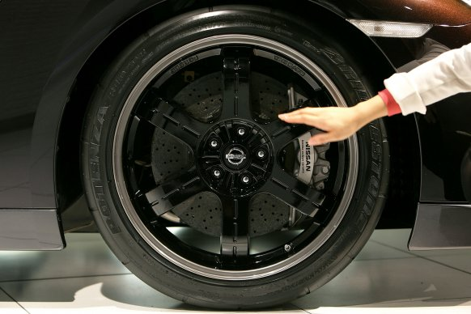

Для монтажа шин с особо низким профилем может понадобиться специальный монтажный станок. Такой есть не в каждой мастерской
Во время собственно шиномонтажа неаккуратные сервисмены могут поцарапать лак на легкосплавном диске, задрать монтировкой закраину шины, проигнорировать состарившийся вентиль камеры и грязь на посадочной поверхности диска. Шина в этих местах будет спускать воздух – ну и что, значит, будет повод приехать сюда снова и под сочувственные вздохи мастера и обвинения в адрес “наших дорог” снова оплатить деньги за ремонт и перебортировку с балансировкой…
Наконец, только на приличном шиномонтаже вам помогут отнести снятые шины к багажнику и погрузить их в машину.
Крепеж колеса – настоящее испытание для шиномонтажника. Нерадивый может забыть затянуть гайки, чрезмерно усердный – сорвать резьбу, превысив допустимое усилие